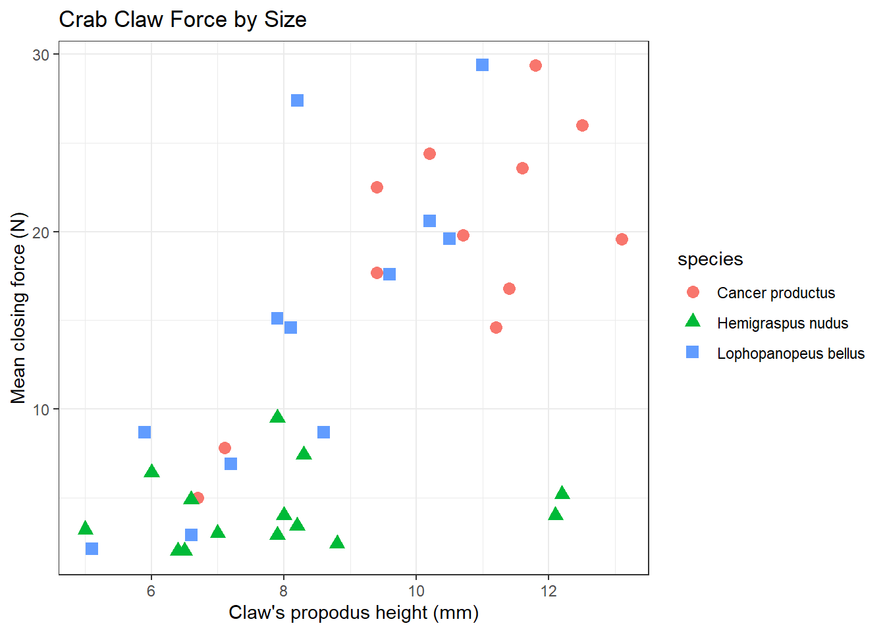
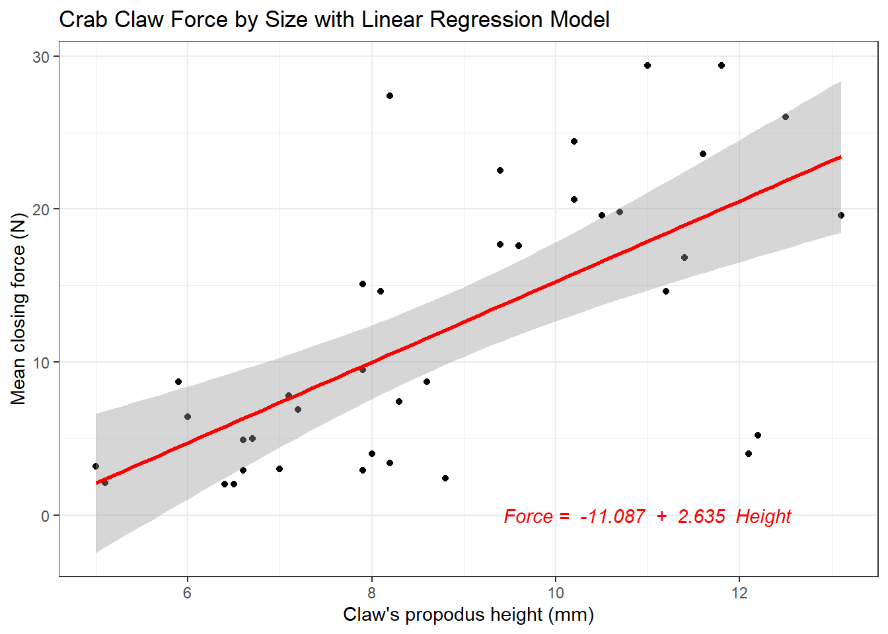

15 Studying Crab Claws
For our next example, we’ll consider a study from zoology, specifically carcinology - the study of crustaceans. My source for these data is Chapter 7 in Ramsey and Schafer (2002) which drew the data from a figure in Yamada and Boulding (1998).
15.1 Setup: Packages Used Here
We will also use the describe function from the psych package.
15.2 The Data
The available data are the mean closing forces (in Newtons) and the propodus heights (mm) of the claws on 38 crabs that came from three different species. The propodus is the segment of the crab’s clawed leg with an immovable finger and palm.

This was part of a study of the effects that predatory intertidal crab species have on populations of snails. The three crab species under study are:
- 14 Hemigraspus nudus, also called the purple shore crab (14 crabs)
- 12 Lophopanopeus bellus, also called the black-clawed pebble crab, and
- 12 Cancer productus, one of several species of red rock crabs (12)
crabs <- read_csv("data/crabs.csv", show_col_types = FALSE)
crabs# A tibble: 38 × 4
crab species force height
<dbl> <chr> <dbl> <dbl>
1 1 Hemigraspus nudus 4 8
2 2 Lophopanopeus bellus 15.1 7.9
3 3 Cancer productus 5 6.7
4 4 Lophopanopeus bellus 2.9 6.6
5 5 Hemigraspus nudus 3.2 5
6 6 Hemigraspus nudus 9.5 7.9
7 7 Cancer productus 22.5 9.4
8 8 Hemigraspus nudus 7.4 8.3
9 9 Cancer productus 14.6 11.2
10 10 Lophopanopeus bellus 8.7 8.6
# ℹ 28 more rowsThe species information is stored here as a character variable. How many different crabs are we talking about in each species?
crabs |> tabyl(species) species n percent
Cancer productus 12 0.3157895
Hemigraspus nudus 14 0.3684211
Lophopanopeus bellus 12 0.3157895As it turns out, we’re going to want to treat the species information as a factor with three levels, rather than as a character variable.
Here’s a quick summary of the data. Take care to note the useless results for the first two variables. At least the function flags with a * those variables it thinks are non-numeric.
psych::describe(crabs) vars n mean sd median trimmed mad min max range skew kurtosis
crab 1 38 19.50 11.11 19.50 19.50 14.08 1 38.0 37.0 0.00 -1.30
species* 2 38 2.00 0.81 2.00 2.00 1.48 1 3.0 2.0 0.00 -1.50
force 3 38 12.13 8.98 8.70 11.53 9.04 2 29.4 27.4 0.47 -1.25
height 4 38 8.81 2.23 8.25 8.78 2.52 5 13.1 8.1 0.19 -1.14
se
crab 1.80
species* 0.13
force 1.46
height 0.36Actually, we’re more interested in these results after grouping by species.
15.3 Association of Size and Force
Suppose we want to describe force on the basis of height, across all 38 crabs. We’ll add titles and identify the three species of crab, using shape and color.
ggplot(crabs, aes(x = height, y = force, color = species, shape = species)) +
geom_point(size = 3) +
labs(title = "Crab Claw Force by Size",
x = "Claw's propodus height (mm)", y = "Mean closing force (N)")
A faceted plot for each species really highlights the difference in force between the Hemigraspus nudus and the other two species of crab.
ggplot(crabs, aes(x = height, y = force, color = species)) +
geom_point(size = 3) +
facet_wrap(~ species) +
guides(color = "none") +
labs(title = "Crab Claw Force by Size",
x = "Claw's propodus height (mm)", y = "Mean closing force (N)")
15.4 The loess smooth
We can obtain a smoothed curve (using several different approaches) to summarize the pattern presented by the data in any scatterplot. For instance, we might build such a plot for the complete set of 38 crabs, adding in a non-linear smooth function (called a loess smooth.)
ggplot(crabs, aes(x = height, y = force)) +
geom_point() +
geom_smooth(method = "loess", se = FALSE, formula = y ~ x) +
labs(title = "Crab Claw Force by Size",
x = "Claw's propodus height (mm)", y = "Mean closing force (N)")
As we have discussed previously, a loess smooth fits a curve to data by tracking (at point x) the points within a neighborhood of point x, with more emphasis given to points near x. It can be adjusted by tweaking the span and degree parameters.
In addition to the curve, smoothing procedures can also provide confidence intervals around their main fitted line. Consider the following plot of the crabs information, which adjusts the span (from its default of 0.75) and also adds in the confidence intervals.
ggplot(crabs, aes(x = height, y = force)) +
geom_point() +
geom_smooth(method = "loess", formula = y ~ x, span = 0.5, se = TRUE) +
labs(title = "Crab Claw Force by Size",
x = "Claw's propodus height (mm)", y = "Mean closing force (N)")
By reducing the size of the span, our resulting picture shows a much less smooth function that we generated previously.
15.4.1 Smoothing within Species
We can, of course, produce the plot above with separate smooths for each of the three species of crab.
ggplot(crabs, aes(x = height, y = force, group = species, color = species)) +
geom_point(size = 3) +
geom_smooth(method = "loess", formula = y ~ x, se = FALSE) +
labs(title = "Crab Claw Force by Size",
x = "Claw's propodus height (mm)", y = "Mean closing force (N)")
If we want to add in the confidence intervals (here I’ll show them at 90% rather than the default of 95%) then this plot should be faceted. Note that by default, what is displayed when se = TRUE are 95% prediction intervals - the level function in stat_smooth [which can be used in place of geom_smooth] is used here to change the coverage percentage from 95% to 90%.
ggplot(crabs, aes(x = height, y = force, group = species, color = species)) +
geom_point() +
stat_smooth(method = "loess", formula = y ~ x, level = 0.90, se = TRUE) +
guides(color = "none") +
labs(title = "Crab Claw Force by Size",
caption = "with loess smooths and 90% confidence intervals",
x = "Claw's propodus height (mm)", y = "Mean closing force (N)") +
facet_wrap(~ species)
More on these and other confidence intervals later, especially in part B.
15.5 Fitting a Linear Regression Model
Suppose we plan to use a simple (least squares) linear regression model to describe force as a function of height. Is a least squares model likely to be an effective choice here?
The plot below shows the regression line predicting closing force as a function of propodus height. Here we annotate the plot to show the actual fitted regression line, which required fitting it with the lm statement prior to developing the graph.
mod <- lm(force ~ height, data = crabs)
ggplot(crabs, aes(x = height, y = force)) +
geom_point() +
geom_smooth(method = "lm", formula = y ~ x, color = "red") +
labs(title = "Crab Claw Force by Size with Linear Regression Model",
x = "Claw's propodus height (mm)", y = "Mean closing force (N)") +
annotate("text", x = 11, y = 0, color = "red", fontface = "italic",
label = paste( "Force = ", round_half_up(coef(mod)[1],3), " + ",
round_half_up(coef(mod)[2],3), " Height" ))
The lm function, again, specifies the linear model we fit to predict force using height. Here’s the summary.
Call:
lm(formula = force ~ height, data = crabs)
Residuals:
Min 1Q Median 3Q Max
-16.7945 -3.8113 -0.2394 4.1444 16.8814
Coefficients:
Estimate Std. Error t value Pr(>|t|)
(Intercept) -11.0869 4.6224 -2.399 0.0218 *
height 2.6348 0.5089 5.177 8.73e-06 ***
---
Signif. codes: 0 '***' 0.001 '**' 0.01 '*' 0.05 '.' 0.1 ' ' 1
Residual standard error: 6.892 on 36 degrees of freedom
Multiple R-squared: 0.4268, Adjusted R-squared: 0.4109
F-statistic: 26.8 on 1 and 36 DF, p-value: 8.73e-06Again, the key things to realize are:
- The outcome variable in this model is force, and the predictor variable is height.
- The straight line model for these data fitted by least squares is force = -11.087 + 2.635 height.
- The slope of height is positive, which indicates that as height increases, we expect that force will also increase. Specifically, we expect that for every additional mm of height, the force will increase by 2.635 Newtons.
- The multiple R-squared (squared correlation coefficient) is 0.427, which implies that 42.7% of the variation in force is explained using this linear model with height. It also implies that the Pearson correlation between force and height is the square root of 0.427, or 0.653.
15.6 Is a Linear Model Appropriate?
The zoology (at least as described in Ramsey and Schafer (2002)) suggests that the actual nature of the relationship would be represented by a log-log relationship, where the log of force is predicted by the log of height.
This log-log model is an appropriate model when we think that percentage increases in X (height, here) lead to constant percentage increases in Y (here, force).
To see the log-log model in action, we plot the log of force against the log of height. We could use either base 10 (log10 in R) or natural (log in R) logarithms.
ggplot(crabs, aes(x = log(height), y = log(force))) +
geom_point() +
geom_smooth(method = "lm", formula = y ~ x) +
labs(title = "Log-Log Model for Crabs data")
The correlations between the raw force and height and between their logarithms turn out to be quite similar, and because the log transformation is monotone in these data, there’s actually no change at all in the Spearman correlations.
| Correlation of | Pearson r | Spearman r |
|---|---|---|
| force and height | 0.653 | 0.657 |
| log(force) and log(height) | 0.662 | 0.657 |
15.6.1 The log-log model
Call:
lm(formula = log(force) ~ log(height), data = crabs)
Residuals:
Min 1Q Median 3Q Max
-1.5657 -0.4450 0.1884 0.4798 1.2422
Coefficients:
Estimate Std. Error t value Pr(>|t|)
(Intercept) -2.7104 0.9251 -2.930 0.00585 **
log(height) 2.2711 0.4284 5.302 5.96e-06 ***
---
Signif. codes: 0 '***' 0.001 '**' 0.01 '*' 0.05 '.' 0.1 ' ' 1
Residual standard error: 0.6748 on 36 degrees of freedom
Multiple R-squared: 0.4384, Adjusted R-squared: 0.4228
F-statistic: 28.11 on 1 and 36 DF, p-value: 5.96e-06Our regression equation is log(force) = -2.71 + 2.271 log(height).
So, for example, if we found a crab with propodus height = 10 mm, our prediction for that crab’s claw force (in Newtons) based on this log-log model would be…
- log(force) = -2.71 + 2.271 log(10)
- log(force) = -2.71 + 2.271 x 2.3025851
- log(force) = 2.5190953
- and so predicted force = exp(2.5190953) = 12.4173582 Newtons, which, naturally, we would round to 12.417 Newtons to match the data set’s level of precision.
15.6.2 How does this compare to our original linear model?
Call:
lm(formula = force ~ height, data = crabs)
Residuals:
Min 1Q Median 3Q Max
-16.7945 -3.8113 -0.2394 4.1444 16.8814
Coefficients:
Estimate Std. Error t value Pr(>|t|)
(Intercept) -11.0869 4.6224 -2.399 0.0218 *
height 2.6348 0.5089 5.177 8.73e-06 ***
---
Signif. codes: 0 '***' 0.001 '**' 0.01 '*' 0.05 '.' 0.1 ' ' 1
Residual standard error: 6.892 on 36 degrees of freedom
Multiple R-squared: 0.4268, Adjusted R-squared: 0.4109
F-statistic: 26.8 on 1 and 36 DF, p-value: 8.73e-06The linear regression equation is force = -11.087 + 2.635 height.
So, for example, if we found a crab with propodus height = 10 mm, our prediction for that crab’s claw force (in Newtons) based on this linear model would be…
- force = -11.0869025 + 2.6348232 x 10
- force = -11.0869025 + 26.3482321
- so predicted force = 15.2613297, which we would round to 15.261 Newtons.
So, it looks like the two models give meaningfully different predictions.
15.7 Making Predictions with a Model
The broom package’s augment function provides us with a consistent method for obtaining predictions (also called fitted values) for a new crab or for our original data. Suppose we want to predict the force level for two new crabs: one with height = 10 mm, and another with height = 12 mm.
newcrab <- tibble(crab = c("Crab_A", "Crab_B"), height = c(10, 12))
augment(crab_linear, newdata = newcrab)# A tibble: 2 × 3
crab height .fitted
<chr> <dbl> <dbl>
1 Crab_A 10 15.3
2 Crab_B 12 20.5Should we want to obtain a prediction interval, we can use the predict function:
predict(crab_linear, newdata = newcrab, interval = "prediction", level = 0.95) fit lwr upr
1 15.26133 1.048691 29.47397
2 20.53098 5.994208 35.06774We’d interpret this result as saying that the linear model’s predicted force associated with a single new crab claw with propodus height 10 mm is 15.3 Newtons, and that a 95% prediction interval for the true value of such a force for such a claw is between 1.0 and 29.5 Newtons. More on prediction intervals later.
15.7.1 Predictions After a Transformation
We can also get predictions from the log-log model. The default choice is a 95% prediction interval.
predict(crab_loglog, newdata = newcrab, interval = "prediction") fit lwr upr
1 2.519095 1.125900 3.912291
2 2.933174 1.515548 4.350800Of course, these predictions describe the log(force) for such a crab claw. To get the prediction in terms of simple force, we’d need to back out of the logarithm, by exponentiating our point estimate and the prediction interval endpoints.
fit lwr upr
1 12.41736 3.082989 50.01341
2 18.78716 4.551916 77.54044We’d interpret this result as saying, for the first new crab, that the log-log model’s predicted force associated with a single new crab claw with propodus height 10 mm is 12.4 Newtons, and that a 95% prediction interval for the true value of such a force for such a claw is between 3.1 and 50.0 Newtons.
15.7.2 Comparing Model Predictions
Suppose we wish to build a plot of force vs height with a straight line for the linear model’s predictions, and a new curve for the log-log model’s predictions, so that we can compare and contrast the implications of the two models on a common scale. The predict function, when not given a new data frame, will use the existing predictor values that are in our crabs data. Such predictions are often called fitted values.
To put the two sets of predictions on the same scale despite the differing outcomes in the two models, we’ll exponentiate the results of the log-log model, and build a little data frame containing the heights and the predicted forces from that model.
A cleaner way to do this might be to use the augment function directly from broom:
augment(crab_loglog)# A tibble: 38 × 8
`log(force)` `log(height)` .fitted .resid .hat .sigma .cooksd .std.resid
<dbl> <dbl> <dbl> <dbl> <dbl> <dbl> <dbl> <dbl>
1 1.39 2.08 2.01 -6.26e-1 0.0280 0.676 1.28e- 2 -0.941
2 2.71 2.07 1.98 7.31e-1 0.0287 0.673 1.79e- 2 1.10
3 1.61 1.90 1.61 -1.15e-4 0.0499 0.684 8.06e-10 -0.000175
4 1.06 1.89 1.58 -5.11e-1 0.0530 0.679 1.69e- 2 -0.778
5 1.16 1.61 0.945 2.18e-1 0.142 0.683 1.01e- 2 0.349
6 2.25 2.07 1.98 2.68e-1 0.0287 0.683 2.39e- 3 0.402
7 3.11 2.24 2.38 7.35e-1 0.0301 0.673 1.90e- 2 1.11
8 2.00 2.12 2.10 -9.44e-2 0.0266 0.684 2.75e- 4 -0.142
9 2.68 2.42 2.78 -9.55e-2 0.0561 0.684 6.30e- 4 -0.146
10 2.16 2.15 2.18 -1.32e-2 0.0263 0.684 5.34e- 6 -0.0199
# ℹ 28 more rowsNow, we’re ready to use the geom_smooth approach to plot the linear fit, and geom_line (which also fits curves) to display the log-log fit.
ggplot(crabs, aes(x = height, y = force)) +
geom_point() +
geom_smooth(method = "lm", se = FALSE,
formula = y ~ x, col="blue", linetype = 2) +
geom_line(data = loglogdat, col = "red", linetype = 2, size = 1) +
annotate("text", 7, 12, label = "Linear Model", col = "blue") +
annotate("text", 10, 8, label = "Log-Log Model", col = "red") +
labs(title = "Comparing the Linear and Log-Log Models for Crab Claw data")Warning: Using `size` aesthetic for lines was deprecated in ggplot2 3.4.0.
ℹ Please use `linewidth` instead.
Based on these 38 crabs, we see some modest differences between the predictions of the two models, with the log-log model predicting generally lower closing force for a given propodus height than would be predicted by a linear model.